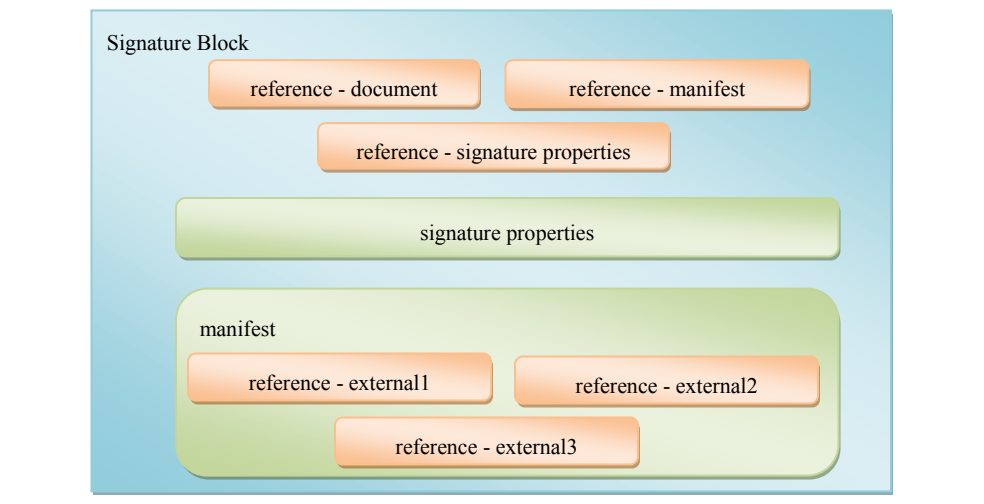

NIST IR 7802 日本語訳
英語タイトル : Trust Model for Security Automation Data 1.0 (TMSAD)日本語タイトル : セキュリティ自動化データのトラストモデル 1.0（TMSAD）
公開日 : 2011-09-20
原文URL : https://csrc.nist.gov/pubs/ir/7802/final
翻訳編集 : 自動生成（有志による非公式の日本語訳）, 原文取得日 : 2026-10-31, 訳文 : 268 / 271 ブロック
[要約] NIST IR 7802 は、セキュリティ自動化データについて完全性、認証、追跡可能性を確立できるようにする、セキュリティ自動化データのトラストモデル 1.0（TMSAD）を定義する報告書です。セキュリティ自動化データは主に拡張可能なマークアップ言語（XML）文書として保存・交換されるため、このトラストモデルは XML 文書の処理に重点を置いています。モデルは、セキュリティ自動化の領域における XML 文書の文脈で、署名、ハッシュ、鍵情報、ID 情報を表現するために既存の仕様をどのように使用するかについての推奨事項で構成されます。適合性、RSA-SHA256 や ECDSA-SHA256 などのアルゴリズムとパラメータ、分離署名・被包署名・包含署名といった署名の種類を含むモデルの概要を説明します。
［NIST のロゴ。公的な標章のため、この非公式サイトには掲載していません。原本 PDF を参照してください。］
NIST Interagency Report 7802
NIST 機関間報告書 7802
Trust Model for Security Automation Data 1.0 (TMSAD)
セキュリティ自動化データのトラストモデル 1.0（TMSAD）
Harold Booth
Adam Halbardier
Harold Booth
Adam Halbardier
NIST Interagency Report 7802
NIST 機関間報告書 7802
Trust Model for Security Automation Data 1.0 (TMSAD)
セキュリティ自動化データのトラストモデル 1.0（TMSAD）
Harold Booth
Adam Halbardier
Harold Booth
Adam Halbardier
COMPUTER SECURITY
コンピュータセキュリティ
Computer Security Division
Information Technology Laboratory
National Institute of Standards and Technology
Gaithersburg, MD 20899-8930
コンピュータセキュリティ部門
情報技術研究所
国立標準技術研究所
Gaithersburg, MD 20899-8930
September 2011
2011 年 9 月
U.S. Department of Commerce
Rebecca M. Blank, Acting Secretary
米国商務省
Rebecca M. Blank 長官代行
National Institute of Standards and Technology
Patrick D. Gallagher, Under Secretary for Standards and Technology and Director
国立標準技術研究所
Patrick D. Gallagher、標準・技術担当商務次官兼所長
Reports on Computer Systems Technology
コンピュータシステム技術に関する報告書
The Information Technology Laboratory (ITL) at the National Institute of Standards and Technology (NIST) promotes the U.S. economy and public welfare by providing technical leadership for the nation’s measurement and standards infrastructure. ITL develops tests, test methods, reference data, proof of concept implementations, and technical analysis to advance the development and productive use of information technology. ITL’s responsibilities include the development of technical, physical, administrative, and management standards and guidelines for the cost-effective security and privacy of sensitive unclassified information in Federal computer systems. This Interagency Report discusses ITL’s research, guidance, and outreach efforts in computer security and its collaborative activities with industry, government, and academic organizations.
国立標準技術研究所（NIST）の情報技術研究所（ITL）は、国の測定・標準基盤に関する技術的リーダーシップを提供することにより、米国の経済と公共の福祉を促進します。ITL は、情報技術の開発と生産的な利用を進めるため、試験、試験方法、参照データ、概念実証の実装、技術分析を開発します。ITL の責務には、連邦コンピュータシステムにおける機密扱いでない機微な情報について、費用対効果の高いセキュリティとプライバシーを実現するための、技術面・物理面・事務面・管理面の標準とガイドラインの策定が含まれます。この機関間報告書は、コンピュータセキュリティに関する ITL の研究、ガイダンス、普及活動と、産業界、政府、学術機関との共同活動について述べるものです。
National Institute of Standards and Technology Interagency Report 7802
26 pages (September 2011)
国立標準技術研究所 機関間報告書 7802
26 ページ（2011 年 9 月）
Certain commercial entities, equipment, or materials may be identified in this document in order to describe an experimental procedure or concept adequately. Such identification is not intended to imply recommendation or endorsement by the National Institute of Standards and Technology, nor is it intended to imply that the entities, materials, or equipment are necessarily the best available for the purpose.
本文書では、実験的な手順や概念を適切に説明するために、特定の商業的な事業体、装置、資材を挙げている場合があります。こうした記載は、国立標準技術研究所による推奨や支持を意味するものではなく、また、挙げられた事業体、資材、装置がその目的に利用できる最良のものであることを意味するものでもありません。
Acknowledgments
謝辞
The authors wish to thank their colleagues who reviewed drafts of this document and contributed to its technical content.
著者らは、本文書の草案をレビューし、その技術的内容に貢献した同僚に感謝します。
Abstract
概要
This report defines the Trust Model for Security Automation Data 1.0 (TMSAD), which permits users to establish integrity, authentication, and traceability for security automation data. Since security automation data is primarily stored and exchanged using Extensible Markup Language (XML) documents, the focus of the trust model is on the processing of XML documents. The trust model is composed of recommendations on how to use existing specifications to represent signatures, hashes, key information, and identity information in the context of an XML document within the security automation domain.
本報告書は、セキュリティ自動化データについて完全性、認証、追跡可能性を確立できるようにする、セキュリティ自動化データのトラストモデル 1.0（TMSAD）を定義します。セキュリティ自動化データは主に拡張可能なマークアップ言語（XML）文書として保存・交換されるため、このトラストモデルは XML 文書の処理に重点を置いています。トラストモデルは、セキュリティ自動化の領域における XML 文書の文脈で、署名、ハッシュ、鍵情報、ID 情報を表現するために既存の仕様をどのように使用するかについての推奨事項で構成されます。
Audience
想定読者
The primary audiences for the TMSAD specification are developers of security automation specifications, IT products that follow TMSAD’s recommendations, and organizations that could take advantage of TMSAD to establish integrity, authentication, and traceability of their security automation data. NIST welcomes feedback on improving the TMSAD specification.
TMSAD 仕様の主な想定読者は、セキュリティ自動化仕様の開発者、TMSAD の推奨事項に従う IT 製品、および TMSAD を利用してセキュリティ自動化データの完全性、認証、追跡可能性を確立できる組織です。NIST は、TMSAD 仕様の改善に向けたフィードバックを歓迎します。
Trademark Information
商標情報
All names are registered trademarks or trademarks of their respective companies.
すべての名称は、それぞれの会社の登録商標または商標です。
Table of Contents
目次
List of Appendices
付録の一覧
List of Figures and Tables
図と表の一覧
1. Introduction
1. はじめに
This document describes a data model for establishing trust for security automation data, referred to as the trust model in the rest of this document. A trust model is a necessary component for handling security automation data to permit users to establish integrity, authentication, and traceability for the data. The trust model can be leveraged to determine authorization—that a requestor of a particular piece of information is permitted access to that information, or that a particular piece of content is permitted to be processed. A trust model may also be used to implement traceability of results, giving increased assurance that a set of results are from a particular source. Finally, a trust model will allow for content integrity to be affirmed, assuring that content has not been modified since it was produced, whether by human or machine.
本文書は、セキュリティ自動化データに対する信頼を確立するためのデータモデルを説明します。このデータモデルを、以降ではトラストモデルと呼びます。トラストモデルは、セキュリティ自動化データを扱ううえで、利用者がそのデータの完全性、認証、追跡可能性を確立できるようにするために必要な構成要素です。トラストモデルは、認可、すなわち特定の情報の要求者がその情報へのアクセスを許可されていること、または特定のコンテンツの処理が許可されていることを判断するために活用できます。トラストモデルは、結果の追跡可能性を実現するために使用することもでき、一連の結果が特定の出所からのものであるという保証を高めます。最後に、トラストモデルにより、コンテンツの完全性を確認でき、人間によるものか機械によるものかを問わず、コンテンツが作成後に変更されていないことを保証できます。
Figure 1 is a high-level example of a content producer signing and exchanging security automation data with a content consumer. The trust model described in this document does not address the creation of the public and private keys, the secure storage of the private key, or the establishment of trust in a public key, but the trust model does address how a content producer should sign security automation data, and how a content consumer should validate that signature.
図 1 は、コンテンツ作成者がセキュリティ自動化データに署名し、コンテンツ利用者と交換する様子の概要を示した例です。本文書で説明するトラストモデルは、公開鍵と秘密鍵の作成、秘密鍵の安全な保管、公開鍵に対する信頼の確立を扱いませんが、コンテンツ作成者がセキュリティ自動化データにどのように署名すべきか、またコンテンツ利用者がその署名をどのように検証すべきかを扱います。

データへの署名と交換を示す図です。左の「Content Producer」（コンテンツの作成者）と右の「Content Consumer」（コンテンツの利用者）は、上の鍵の絵の付いた「Public Key」（公開鍵）を経由する破線の矢印で結ばれています。中央の巻物「Security Automation Data」（セキュリティ自動化データ）と鍵の絵「Private Key」（秘密鍵）からの矢印が作成者のところで合わさり、そこと下の楕円「Signature」（署名）が両向きの矢印で結ばれています。「Security Automation Data」と「Signature」からの矢印が合わさって利用者へ向かいます。
Figure 1 – Example of signing and exchanging security automation data
図 1 – セキュリティ自動化データの署名と交換の例
Assuming the public key is exchanged in a trusted manner, the basic steps of the example above are:
公開鍵が信頼できる方法で交換されていると仮定すると、上記の例の基本的な手順は次のとおりです。
1.Content producer creates or identifies security automation data to be signed.
1.コンテンツ作成者が、署名するセキュリティ自動化データを作成または特定します。
2.Content producer creates a signature using its private key and security automation data as input.
2.コンテンツ作成者が、自身の秘密鍵とセキュリティ自動化データを入力として署名を作成します。
3.Content producer sends the security automation data and signature to the content consumer.
3.コンテンツ作成者が、セキュリティ自動化データと署名をコンテンツ利用者に送ります。
4.Content consumer verifies the signature using the received security automation data, signature and trusted public key.
4.コンテンツ利用者が、受け取ったセキュリティ自動化データ、署名、および信頼できる公開鍵を用いて署名を検証します。
1.1 Purpose and Scope
1.1 目的と適用範囲
This document provides guidelines and recommendations for how a common trust model, called the Trust Model for Security Automation Data (TMSAD), can be applied to specifications within the security automation domain, such as Security Content Automation Protocol (SCAP). Since information in the security automation domain is primarily exchanged using Extensible Markup Language (XML), the focus of this model is on the processing of XML documents [XML]. The trust model is composed of recommendations on how to use existing specifications to represent signatures, hashes, key information, and identity information in the context of an XML document within the security automation domain.
本文書は、セキュリティ自動化データのトラストモデル（TMSAD）と呼ばれる共通のトラストモデルを、セキュリティコンテンツ自動化プロトコル（SCAP）などのセキュリティ自動化領域の仕様にどのように適用できるかについて、ガイドラインと推奨事項を示します。セキュリティ自動化領域の情報は主に拡張可能なマークアップ言語（XML）を用いて交換されるため、このモデルは XML 文書 [XML] の処理に重点を置いています。トラストモデルは、セキュリティ自動化領域における XML 文書の文脈で、署名、ハッシュ、鍵情報、ID 情報を表現するために既存の仕様をどのように使用するかについての推奨事項で構成されます。
This document makes extensive use of the W3C recommendation XML Signature Syntax and Processing [XMLDSIG], referencing the features and syntax of [XMLDSIG]. The requirements of those features are described in the W3C recommendation and are not repeated in this document. It is expected that readers of this document will already be familiar with the details of [XMLDSIG].
本文書は、W3C 勧告である XML Signature Syntax and Processing [XMLDSIG] を広範に利用し、[XMLDSIG] の機能と構文を参照します。それらの機能の要件は W3C 勧告に記述されているため、本文書では繰り返しません。本文書の読者は、すでに [XMLDSIG] の詳細に精通していることが想定されます。
Detailing a method for managing and exchanging public keys is out of scope for this document. This document provides information on how X.509 certificates or public keys may be represented within the model; however, this document defers to the content consumer for establishing a trust relationship to a particular identity or key.
公開鍵を管理および交換する方法の詳細は、本文書の適用範囲外です。本文書は、X.509 証明書や公開鍵をモデル内でどのように表現できるかについての情報を提供しますが、特定の ID や鍵との信頼関係の確立については、コンテンツ利用者に委ねます。
1.2 Document Structure
1.2 文書の構成
This report is organized into the following major sections:
本報告書は、次の主要な節で構成されています。
•Section 2 defines selected abbreviations used in this specification.
•第 2 節は、本仕様で使用する主な略語を定義します。
•Section 3 provides an overview of related specifications and standards.
•第 3 節は、関連する仕様と標準の概要を示します。
•Section 4 defines the high-level conformance rules for this specification.
•第 4 節は、本仕様の上位レベルの適合性規則を定義します。
•Section 5 defines the cryptographic algorithms and parameters to those algorithms that may be used for hashing and signing.
•第 5 節は、ハッシュ化と署名に使用できる暗号アルゴリズムと、それらのアルゴリズムのパラメータを定義します。
•Section 6 provides a brief overview of the XML Signature Syntax and Processing specification; it defines how that specification will be used and what additional requirements security automation will impose.
•第 6 節は、XML Signature Syntax and Processing 仕様の概要を簡潔に示し、その仕様をどのように使用するか、セキュリティ自動化がどのような追加要件を課すかを定義します。
•Section 7 describes processing requirements for the trust model.
•第 7 節は、トラストモデルの処理要件を説明します。
•Appendix A provides some examples of usage of the defined trust model.
•付録 A は、定義したトラストモデルの使用例を示します。
•Appendix B lists normative and informative references.
•付録 B は、規範的参考文献と参考情報の参考文献を一覧にします。
•Appendix C provides a change log that documents significant changes to major drafts of the specification.
•付録 C は、仕様の主要な草案における重要な変更を記録した変更履歴を示します。
1.3 Document Conventions
1.3 文書の表記規則
The key words “MUST”, “MUST NOT”, “REQUIRED”, “SHALL”, “SHALL NOT”, “SHOULD”, “SHOULD NOT”, “RECOMMENDED”, “MAY”, and “OPTIONAL” in this document are to be interpreted as described in [RFC2119].
本文書中のキーワード “MUST”、“MUST NOT”、“REQUIRED”、“SHALL”、“SHALL NOT”、“SHOULD”、“SHOULD NOT”、“RECOMMENDED”、“MAY”、“OPTIONAL” は、[RFC2119] に記述されているとおりに解釈されます。
Text intended to represent computing system input, output, or algorithmic processing is presented in fixed-width Courier font.
コンピューティングシステムの入力、出力、またはアルゴリズム処理を表すテキストは、固定幅の Courier フォントで示します。
Table 1 shows the conventional XML mappings used in this document.
表 1 は、本文書で使用する従来の XML マッピングを示します。
Table 1 – Conventional XML Mappings
表 1 – 従来の XML マッピング
| Prefix | Namespace | Schema |
|---|---|---|
| dc | http:/ | Simple Dublin Core elements |
| dsig | http:/ | Interoperable XML digital signatures |
| dt | http:/ | Trust Model for Security Automation Data extensions |
| xs | http:/ | XML Schema schema document |
| プレフィックス | 名前空間 | スキーマ |
|---|---|---|
| dc | http:/ | Simple Dublin Core 要素 |
| dsig | http:/ | 相互運用可能な XML デジタル署名 |
| dt | http:/ | セキュリティ自動化データのトラストモデルの拡張 |
| xs | http:/ | XML Schema のスキーマ文書 |
2. Abbreviations
2. 略語
This section defines selected abbreviations, including acronyms, used within the document.
この節は、頭字語を含む、本文書で使用する主な略語を定義します。
| DSS | Digital Signature Standard |
| ECDSA | Elliptic Curve Digital Signature Algorithm |
| FIPS | Federal Information Processing Standards |
| IR | Interagency Report |
| IT | Information Technology |
| ITL | Information Technology Laboratory |
| NIST | National Institute of Standards and Technology |
| RFC | Request for Comments |
| SCAP | Security Content Automation Protocol |
| SHA | Secure Hash Algorithm |
| SP | Special Publication |
| TMSAD | Trust Model for Security Automation Data |
| URI | Uniform Resource Identifier |
| W3C | World Wide Web Consortium |
| XML | Extensible Markup Language |
| XSLT | Extensible Stylesheet Language Transformation |
| DSS | デジタル署名標準（Digital Signature Standard） |
| ECDSA | 楕円曲線デジタル署名アルゴリズム（Elliptic Curve Digital Signature Algorithm） |
| FIPS | 連邦情報処理標準（Federal Information Processing Standards） |
| IR | 機関間報告書（Interagency Report） |
| IT | 情報技術（Information Technology） |
| ITL | 情報技術研究所（Information Technology Laboratory） |
| NIST | 国立標準技術研究所（National Institute of Standards and Technology） |
| RFC | コメント募集（Request for Comments） |
| SCAP | セキュリティコンテンツ自動化プロトコル（Security Content Automation Protocol） |
| SHA | セキュアハッシュアルゴリズム（Secure Hash Algorithm） |
| SP | 特別刊行物（Special Publication） |
| TMSAD | セキュリティ自動化データのトラストモデル（Trust Model for Security Automation Data） |
| URI | 統一資源識別子（Uniform Resource Identifier） |
| W3C | World Wide Web コンソーシアム（World Wide Web Consortium） |
| XML | 拡張可能なマークアップ言語（Extensible Markup Language） |
| XSLT | 拡張可能なスタイルシート変換（Extensible Stylesheet Language Transformation） |
3. Relationship to Existing Specifications and Standards
3. 既存の仕様および標準との関係
This document makes use of existing specifications such as XML Signature Syntax and Processing [XMLDSIG] to establish a trust model. This document further specifies and constrains usage of [XMLDSIG] and other W3C recommendations to satisfy requirements exposed within the security automation domain.
本文書は、トラストモデルを確立するために、XML Signature Syntax and Processing [XMLDSIG] などの既存の仕様を利用します。本文書はさらに、セキュリティ自動化領域で明らかになった要件を満たすため、[XMLDSIG] およびその他の W3C 勧告の使用法を詳細化し、制約します。
Although XML Signature Syntax and Processing Version 1.1 [XMLDSIG-11] is not a W3C recommendation as of mid-2011, this document adds requirements for selected cryptographic algorithms consistent with the requirements currently included in [XMLDSIG-11].
XML Signature Syntax and Processing Version 1.1 [XMLDSIG-11] は 2011 年中頃の時点で W3C 勧告ではありませんが、本文書は、[XMLDSIG-11] に現在含まれている要件と整合する形で、選択した暗号アルゴリズムの要件を追加します。
4. Conformance
4. 適合性
Products and organizations may want to claim conformance with this specification for a variety of reasons. For example, a software vendor may want to assert that its product uses the trust model properly and can interoperate with any other product using the trust model. Another example is a policy mandating that an organization use the trust model for establishing suitability of content for use, or establishing provenance of content.
製品や組織は、さまざまな理由から、本仕様への適合を主張したい場合があります。たとえば、ソフトウェアベンダーは、自社製品がトラストモデルを適切に使用しており、トラストモデルを使用する他のあらゆる製品と相互運用できると表明したい場合があります。別の例として、コンテンツを使用するうえでの適切性を確立する、またはコンテンツの来歴を確立するために、組織にトラストモデルの使用を義務づける方針があります。
This section provides the high-level requirements that a product or document containing signature information MUST meet for conformance with this specification. Most of the requirements listed in this section reference other sections in the document that fully define the requirements.
この節は、署名情報を含む製品または文書が本仕様への適合のために満たさなければならない（MUST）上位レベルの要件を示します。この節に挙げる要件の大半は、その要件を完全に定義する本文書内の他の節を参照しています。
Other specifications that use the trust model defined within this document MAY define additional requirements and recommendations. In addition, other specifications or standards MAY define additional requirements on the correct implementation of the cryptographic algorithms in specific environments or situations. Such requirements and recommendations are outside the scope of this publication.
本文書で定義するトラストモデルを使用する他の仕様は、追加の要件や推奨事項を定義してもよい（MAY）。さらに、他の仕様や標準は、特定の環境や状況における暗号アルゴリズムの正しい実装について、追加の要件を定義してもよい（MAY）。そのような要件や推奨事項は、本刊行物の適用範囲外です。
4.1 Product Conformance
4.1 製品の適合性
There are two types of products that may be conformant with the trust model: content authors and content consumers. Content authors are products that generate content that uses the trust model, while content consumers are products that process content that leverages the trust model. All products claiming conformance with this specification MUST comply with the following requirements:
トラストモデルに適合しうる製品には、コンテンツ作成者とコンテンツ利用者の 2 種類があります。コンテンツ作成者は、トラストモデルを使用するコンテンツを生成する製品であり、コンテンツ利用者は、トラストモデルを活用するコンテンツを処理する製品です。本仕様への適合を主張するすべての製品は、次の要件に従わなければなりません（MUST）。
1.Content consumers MUST consume and correctly process well-formed trust model documents as defined in Section 6. This includes following all of the processes defined in Section 7.
1.コンテンツ利用者は、第 6 節で定義する整形式のトラストモデル文書を取り込み、正しく処理しなければなりません（MUST）。これには、第 7 節で定義するすべての処理に従うことが含まれます。
2.Content authors MUST ensure that all trust model documents they produce are well-formed. This includes following all of the processes defined in Section 7, and adhering to the syntax, structural, and other trust model document development requirements defined in Section 6.
2.コンテンツ作成者は、作成するすべてのトラストモデル文書が整形式であることを保証しなければなりません（MUST）。これには、第 7 節で定義するすべての処理に従うこと、および第 6 節で定義する構文、構造、その他のトラストモデル文書の作成要件を遵守することが含まれます。
3.All products MUST support the algorithms and parameters identified in Section 5.
3.すべての製品は、第 5 節で示すアルゴリズムとパラメータをサポートしなければなりません（MUST）。
4.All products MUST make an explicit claim of conformance to this specification in documentation provided to end users.
4.すべての製品は、エンドユーザに提供する文書の中で、本仕様への適合を明示的に主張しなければなりません（MUST）。
4.2 Content Conformance
4.2 コンテンツの適合性
Organizations creating or maintaining documents that claim conformance with this specification SHALL adhere to the syntax, structural, and other trust model document development requirements defined in Section 6.
本仕様への適合を主張する文書を作成または維持する組織は、第 6 節で定義する構文、構造、その他のトラストモデル文書の作成要件を遵守しなければなりません（SHALL）。
In addition there are recommendations in Section 5 that organizations SHOULD consider when creating or maintaining trust model documents.
さらに、第 5 節には、組織がトラストモデル文書を作成または維持する際に考慮すべき（SHOULD）推奨事項があります。
5. Algorithms and Parameters
5. アルゴリズムとパラメータ
Since [XMLDSIG] does not require support for all of the signature and hash algorithms needed for the trust model, this section adds requirements for supporting the RSA Algorithm signature method with SHA-256 algorithm and the ECDSAwithSHA256 signature algorithm. This section adds these selected algorithms into the trust model consistent with both RFC 4051 [RFC4051] and the currently under development [XMLDSIG-11]. The RSA algorithm refers to the RSASSA-PKCS1-v1_5 algorithm described in Section 8.2 of RFC 3447 [PKCS1].
[XMLDSIG] は、トラストモデルに必要なすべての署名アルゴリズムとハッシュアルゴリズムのサポートを求めていないため、この節は、SHA-256 アルゴリズムを用いた RSA アルゴリズム署名方式と ECDSAwithSHA256 署名アルゴリズムをサポートするための要件を追加します。この節は、RFC 4051 [RFC4051] および現在策定中の [XMLDSIG-11] の両方と整合する形で、これらの選択したアルゴリズムをトラストモデルに加えます。RSA アルゴリズムとは、RFC 3447 [PKCS1] の第 8.2 節に記述されている RSASSA-PKCS1-v1_5 アルゴリズムを指します。
Other algorithms not otherwise required by [XMLDSIG] or this section MAY OPTIONALLY be used by content authors and supported by content consumers, but only the algorithms and parameters required by [XMLDSIG] and this section are assured to be interoperable across all implementations. If an algorithm identifier has been specified in [RFC4051], the identifier specified within [RFC4051] SHOULD be used. Section 7 includes additional processing requirements for content consumers.
[XMLDSIG] または本節で別途求められていないその他のアルゴリズムは、コンテンツ作成者が任意に使用し（MAY OPTIONALLY）、コンテンツ利用者がサポートしてもよいですが、すべての実装間での相互運用性が保証されるのは、[XMLDSIG] と本節が求めるアルゴリズムとパラメータだけです。[RFC4051] でアルゴリズム識別子が規定されている場合は、[RFC4051] で規定された識別子を使用すべきです（SHOULD）。第 7 節には、コンテンツ利用者に対する追加の処理要件が含まれます。
NIST Federal Information Processing Standards Publication 186-3, Digital Signature Standard (DSS) [FIPS186-3] and NIST Special Publication (SP) 800-57, Recommendation for Key Management – Part 1: General [SP800-57] provide additional information relating to security considerations in key size choice for various algorithms.
NIST 連邦情報処理標準刊行物 186-3 Digital Signature Standard (DSS) [FIPS186-3] および NIST 特別刊行物（SP）800-57 Recommendation for Key Management – Part 1: General [SP800-57] は、さまざまなアルゴリズムの鍵長の選択におけるセキュリティ上の考慮事項に関する追加情報を提供します。
5.1 RSA-SHA256
5.1 RSA-SHA256
The RSA Algorithm signature method with SHA-256 algorithm MUST be supported. Consistent with Section 2.3.2 of [RFC4051] and Section 6.4.2 of [XMLDSIG-11], the RSA Algorithm signature method with SHA-256 algorithm MUST be identified using the following algorithm identifier:
SHA-256 アルゴリズムを用いた RSA アルゴリズム署名方式は、サポートされなければなりません（MUST）。[RFC4051] の第 2.3.2 節および [XMLDSIG-11] の第 6.4.2 節と整合する形で、SHA-256 アルゴリズムを用いた RSA アルゴリズム署名方式は、次のアルゴリズム識別子で識別されなければなりません（MUST）。
http://www.w3.org/2001/04/xmldsig-more#rsa-sha256
http://www.w3.org/2001/04/xmldsig-more#rsa-sha256
The <dsig:SignatureValue> content for this identifier MUST be the base64 encoding, as described in RFC 2045 [RFC2045], of the octet string, S, specified in Section 8.2.1 of RFC 3447 [PKCS1]. (Signature computation and verification does not require implementation of an ASN.1 parser.) For the RSA Algorithm, content consumers MUST support 2048-bit keys and SHOULD support 3072-bit keys. Content authors SHOULD use a key size of either 2048 or 3072 bits.
この識別子の <dsig:SignatureValue> の内容は、RFC 3447 [PKCS1] の第 8.2.1 節で規定されたオクテット列 S を、RFC 2045 [RFC2045] に記述されている base64 でエンコードしたものでなければなりません（MUST）。（署名の計算と検証に、ASN.1 パーサーの実装は必要ありません。）RSA アルゴリズムについて、コンテンツ利用者は 2048 ビットの鍵をサポートしなければならず（MUST）、3072 ビットの鍵をサポートすべきです（SHOULD）。コンテンツ作成者は、2048 ビットまたは 3072 ビットのいずれかの鍵長を使用すべきです（SHOULD）。
5.2 ECDSA-SHA256
5.2 ECDSA-SHA256
The ECDSAwithSHA256 signature algorithm MUST be supported, which is ECDSA [FIPS186-3] over the P-256 prime curve specified in Appendix D of [FIPS186-3] and using the SHA-256 algorithm. Consistent with Section 2.3.6 of [RFC4051] and Section 6.4.3 of [XMLDSIG-11], ECDSAwithSHA256 MUST be identified using the following algorithm identifier:
ECDSAwithSHA256 署名アルゴリズムは、サポートされなければなりません（MUST）。これは、[FIPS186-3] の付録 D で規定された素数曲線 P-256 上の ECDSA [FIPS186-3] で、SHA-256 アルゴリズムを使用するものです。[RFC4051] の第 2.3.6 節および [XMLDSIG-11] の第 6.4.3 節と整合する形で、ECDSAwithSHA256 は、次のアルゴリズム識別子で識別されなければなりません（MUST）。
http://www.w3.org/2001/04/xmldsig-more#ecdsa-sha256
http://www.w3.org/2001/04/xmldsig-more#ecdsa-sha256
The ECDSA algorithm signature is a pair of integers referred to as (r, s). The <dsig:SignatureValue> consists of the base64 [RFC2045] encoding of the concatenation of two octet-streams that respectively result from the octet-encoding of the values r and s, in that order. Integer to octet-stream conversion MUST be done according to the I2OSP operation defined in Section 4.1 of RFC 3447 [PKCS1] with the xLen parameter equal to the size of the base point order of the curve in bytes (32 for the P-256 curve).
ECDSA アルゴリズムの署名は、(r, s) と呼ばれる整数の組です。<dsig:SignatureValue> は、整数 r と s をこの順にそれぞれオクテットエンコードして得られる 2 つのオクテットストリームを連結したものの base64 [RFC2045] エンコードで構成されます。整数からオクテットストリームへの変換は、RFC 3447 [PKCS1] の第 4.1 節で定義された I2OSP 演算に従い、xLen パラメータを曲線の基点位数のバイト単位の大きさ（P-256 曲線では 32）にして行わなければなりません（MUST）。
5.3 Digest Algorithms
5.3 ダイジェストアルゴリズム
While content consumers are still REQUIRED to support the SHA-1 Digest algorithm as defined in Section 6.2.1 of [XMLDSIG], content authors SHOULD NOT use the SHA-1 Digest algorithm. Content authors SHOULD instead use one of the algorithms defined within this section. The identifiers used below are consistent with either [RFC4051] or the identifiers used in XML Encryption Syntax and Processing [XMLENC], and with the current work occurring on [XMLDSIG-11]. The SHA-256 Digest algorithm MUST be supported by conforming implementations. SHA-384 and SHA-512 are OPTIONAL to support.
コンテンツ利用者は、[XMLDSIG] の第 6.2.1 節で定義された SHA-1 ダイジェストアルゴリズムをサポートすることが引き続き必須（REQUIRED）ですが、コンテンツ作成者は SHA-1 ダイジェストアルゴリズムを使用すべきではありません（SHOULD NOT）。コンテンツ作成者は、代わりに本節で定義するアルゴリズムのいずれかを使用すべきです（SHOULD）。以下で使用する識別子は、[RFC4051] または XML Encryption Syntax and Processing [XMLENC] で使用されている識別子と整合し、また [XMLDSIG-11] で進められている現在の作業とも整合しています。SHA-256 ダイジェストアルゴリズムは、適合する実装でサポートされなければなりません（MUST）。SHA-384 と SHA-512 は、サポートは任意（OPTIONAL）です。
5.3.1 SHA-256
5.3.1 SHA-256
The SHA-256 algorithm [FIPS180-3] MUST be identified using the following algorithm identifier:
SHA-256 アルゴリズム [FIPS180-3] は、次のアルゴリズム識別子で識別されなければなりません（MUST）。
http://www.w3.org/2001/04/xmlenc#sha256
http://www.w3.org/2001/04/xmlenc#sha256
The SHA-256 algorithm produces a 256-bit digest string. The content of the <dsig:DigestValue> MUST be the base64 [RFC2045] encoding of the digest string viewed as a 32-octet octet stream.
SHA-256 アルゴリズムは、256 ビットのダイジェスト文字列を生成します。<dsig:DigestValue> の内容は、ダイジェスト文字列を 32 オクテットのオクテットストリームとみなして base64 [RFC2045] でエンコードしたものでなければなりません（MUST）。
5.3.2 SHA-384
5.3.2 SHA-384
The SHA-384 algorithm [FIPS180-3] MUST be identified using the following algorithm identifier:
SHA-384 アルゴリズム [FIPS180-3] は、次のアルゴリズム識別子で識別されなければなりません（MUST）。
http://www.w3.org/2001/04/xmldsig-more#sha384
http://www.w3.org/2001/04/xmldsig-more#sha384
The SHA-384 algorithm produces a 384-bit digest string. The content of the <dsig:DigestValue> MUST be the base64 [RFC2045] encoding of the digest string viewed as a 48-octet octet stream.
SHA-384 アルゴリズムは、384 ビットのダイジェスト文字列を生成します。<dsig:DigestValue> の内容は、ダイジェスト文字列を 48 オクテットのオクテットストリームとみなして base64 [RFC2045] でエンコードしたものでなければなりません（MUST）。
5.3.3 SHA-512
5.3.3 SHA-512
The SHA-512 algorithm [FIPS180-3] MUST be identified using the following algorithm identifier:
SHA-512 アルゴリズム [FIPS180-3] は、次のアルゴリズム識別子で識別されなければなりません（MUST）。
http://www.w3.org/2001/04/xmlenc#sha512
http://www.w3.org/2001/04/xmlenc#sha512
The SHA-512 algorithm produces a 512-bit digest string. The content of the <dsig:DigestValue> MUST be the base64 [RFC2045] encoding of the digest string viewed as a 64-octet octet stream.
SHA-512 アルゴリズムは、512 ビットのダイジェスト文字列を生成します。<dsig:DigestValue> の内容は、ダイジェスト文字列を 64 オクテットのオクテットストリームとみなして base64 [RFC2045] でエンコードしたものでなければなりません（MUST）。
6. Model Overview
6. モデルの概要
The syntax and processing of the trust model is based on the [XMLDSIG] W3C Recommendation, and content authors and consumers MUST follow the conformance requirements found in [XMLDSIG]. This section provides a high-level overview and gives recommendations on how [XMLDSIG] can be used to establish a mechanism where signature information can be provided for the XML documents used within the security automation domain.
トラストモデルの構文と処理は、W3C 勧告 [XMLDSIG] に基づいており、コンテンツ作成者とコンテンツ利用者は、[XMLDSIG] にある適合性要件に従わなければなりません（MUST）。この節は、上位レベルの概要を示すとともに、セキュリティ自動化領域で使用する XML 文書に署名情報を提供する仕組みを確立するために、[XMLDSIG] をどのように使用できるかについての推奨事項を示します。
Figure 2 shows an informative, high-level composition of a signature. Not all signatures will contain all elements, and some signatures could contain additional elements. Content authors may create the signature block based on the elements necessary for their use case. Content consumers may choose to validate the signature block prior to processing the signed content.
図 2 は、署名の構成を参考情報として上位レベルで示したものです。すべての署名がすべての要素を含むわけではなく、一部の署名は追加の要素を含む場合があります。コンテンツ作成者は、自身のユースケースに必要な要素に基づいて署名ブロックを作成してもよいです。コンテンツ利用者は、署名されたコンテンツを処理する前に、署名ブロックを検証することを選択してもよいです。

入れ子の箱の図です。大きな箱「Signature Block」（署名ブロック）の中に、「reference - document」（参照：文書）、「reference - manifest」（参照：マニフェスト）、「reference - signature properties」（参照：署名プロパティ）の箱、横長の箱「signature properties」（署名プロパティ）、箱「manifest」（マニフェスト）があり、「manifest」の中に「reference - external1」「reference - external2」「reference - external3」（参照：外部1〜3）の箱があります。
Figure 2 – High-Level Signature Diagram
図 2 – 署名の概要図
6.1 Signature Types
6.1 署名の種類
As defined by [XMLDSIG], there are three main ways that a signature can relate to a given reference, and it is possible that the same signature will contain references with different signature relationships. The three possible signature relationships are:
[XMLDSIG] で定義されているとおり、署名が特定の参照と関係する方法には主に 3 つあり、同じ署名が、異なる署名関係を持つ参照を含む場合もあります。可能な 3 つの署名関係は次のとおりです。
•Detached - the signature is over content external to the signature itself
•分離署名（Detached）- 署名が、署名自体の外部にあるコンテンツに対するものである
•Enveloped - the signature is embedded within the content that is signed
•被包署名（Enveloped）- 署名が、署名対象のコンテンツの中に埋め込まれている
•Enveloping - the signature contains the content that is signed
•包含署名（Enveloping）- 署名が、署名対象のコンテンツを含んでいる
The following subsections provide more information on selecting the appropriate style of signature.
以下の小節は、適切な署名の形式を選択するための詳細な情報を示します。
6.1.1 Detached
6.1.1 分離署名（Detached）
横に並んだ2つの別々の角丸の箱の図です。「Document1」（文書1）の中に箱「Signed Content」（署名されたコンテンツ）があり、「Document2」（文書2）の中に楕円「Signature」（署名）があります。
Figure 3 – Detached Signature in a Separate Document
図 3 – 別の文書にある分離署名
角丸の箱「Document」（文書）の中に楕円「Signature」（署名）があり、その下に別の箱「Signed Content」（署名されたコンテンツ）がある図です。
Figure 4 – Detached Signature in the Same Document
図 4 – 同じ文書にある分離署名
A detached signature typically occurs when the signature and signed content are separate. Figure 3 represents the case when the signed content and the signature are in two separate documents. Figure 4 represents a detached signature where the signed content and signature are in the same document but are sibling nodes (or a child node of a sibling). Note that in Figure 4 the “Signature” can occur either before or after the “Signed Content”. The consequence of a detached signature is that the content being signed may be managed independently, and it is not necessary for the content being signed to provide an element for containing the signature. It is necessary that another file containing the signature, or a file format capable of containing the signature and the signed content must be created or used. “Detached” is most commonly useful when a collection of documents must be signed with a single signature, or if a document must be signed but a signature element has not been provided.
分離署名は、通常、署名と署名対象のコンテンツが別々の場合に生じます。図 3 は、署名対象のコンテンツと署名が 2 つの別々の文書にある場合を表します。図 4 は、署名対象のコンテンツと署名が同じ文書にありますが、兄弟ノード（または兄弟の子ノード）である分離署名を表します。図 4 では、「署名（Signature）」が「署名対象のコンテンツ（Signed Content）」の前にも後にも出現しうることに注意してください。分離署名の結果として、署名対象のコンテンツは独立して管理でき、署名対象のコンテンツが署名を含むための要素を提供する必要はありません。署名を含む別のファイル、または署名と署名対象のコンテンツの両方を含められるファイル形式を、作成または使用する必要があります。「分離署名（Detached）」は、文書の集合に 1 つの署名で署名しなければならない場合や、文書に署名しなければならないが署名要素が用意されていない場合に、最もよく役立ちます。
6.1.2 Enveloped
6.1.2 被包署名（Enveloped）
角丸の箱「Document」（文書）の中に箱「Signed Content」（署名されたコンテンツ）があり、さらにその中に楕円「Signature」（署名）がある図です。
Figure 5 – Enveloped Signature
図 5 – 被包署名
Figure 5 shows how an enveloped signature relates to the signed content. The signed content has an element that contains the signature. A named transform is used to exclude the signature element during signature validation. In contrast to the detached signature, when the signature is enveloped in the content being signed, a specific version of the signature specification must be referenced by the content being signed. Additionally, whenever content is signed, the signature will always be available with the content, unlike with a detached signature where the signature may be located separately. Enveloped is most commonly useful when a single standalone document must be signed independently of any other documents.
図 5 は、被包署名が署名対象のコンテンツとどのように関係するかを示します。署名対象のコンテンツには、署名を含む要素があります。署名の検証時に署名要素を除外するために、名前付きの変換が使用されます。分離署名とは対照的に、署名が署名対象のコンテンツに包まれている場合、署名対象のコンテンツから署名仕様の特定のバージョンを参照しなければなりません。さらに、コンテンツに署名すると、署名が別の場所にある場合がある分離署名とは異なり、署名は常にコンテンツとともに利用できます。「被包署名（Enveloped）」は、単独の文書に、他のいかなる文書とも独立して署名しなければならない場合に、最もよく役立ちます。
6.1.3 Enveloping
6.1.3 包含署名（Enveloping）
角丸の箱「Document」（文書）の中に楕円「Signature」（署名）があり、さらにその中に箱「Signed Content」（署名されたコンテンツ）がある図です。
Figure 6 – Enveloping Signature
図 6 – 包含署名
Figure 6 shows how an enveloping signature relates to the signed content. The signed content is contained as a child of the <dsig:Object> node within the signature. To process the signed content, the signature syntax will also need to be processed. If the same content is unsigned, it will have a different format from the signed version of the content. As with enveloped, the signature will always be available with the content if it has been signed. Most commonly, enveloping is useful when the content is another signature that must be signed. Manifest and signature properties also have an enveloping relationship to the signature which includes these elements.
図 6 は、包含署名が署名対象のコンテンツとどのように関係するかを示します。署名対象のコンテンツは、署名内の <dsig:Object> ノードの子として含まれます。署名対象のコンテンツを処理するには、署名の構文も処理する必要があります。同じコンテンツが署名されていない場合、そのコンテンツは署名済みのものとは異なる形式になります。被包署名と同様に、コンテンツに署名した場合、署名は常にコンテンツとともに利用できます。最も一般的には、包含署名は、コンテンツが署名しなければならない別の署名である場合に役立ちます。マニフェストと署名プロパティも、それらの要素を含む署名と包含の関係にあります。
6.2 XML Signature Syntax Overview
6.2 XML 署名の構文の概要
All signature content MUST conform to the [XMLDSIG] specification and validate against the schema found at http://www.w3.org/TR/2002/REC-xmldsig-core-20020212/xmldsig-core-schema.xsd. Section 2.0 of [XMLDSIG] has a figure showing an informal representation of the syntax. Figure 7 is a modified version of that figure to show additional areas of interest. The additional highlighted items are the <dsig:KeyValue>, <dsig:X509Data>, <dsig:Manifest>, and <dsig:SignatureProperties> elements. The <dsig:KeyValue> and <dsig:X509Data> elements are ways to obtain the public key that can be used to validate the signature. In Figure 7 the "?", "+", and "*" characters represent the number of times the preceding element or attribute is to be used. "?" represents once or not at all, "+" represents one or more times, and "*" represents zero or more times.
すべての署名コンテンツは、[XMLDSIG] 仕様に適合し、http://www.w3.org/TR/2002/REC-xmldsig-core-20020212/xmldsig-core-schema.xsd にあるスキーマに対して妥当でなければなりません（MUST）。[XMLDSIG] の第 2.0 節には、構文を非公式に表した図があります。図 7 は、その図に注目すべき領域を追加して改変したものです。追加で強調した項目は、<dsig:KeyValue>、<dsig:X509Data>、<dsig:Manifest>、<dsig:SignatureProperties> の各要素です。<dsig:KeyValue> 要素と <dsig:X509Data> 要素は、署名の検証に使用できる公開鍵を取得する方法です。図 7 の "?"、"+"、"*" の文字は、直前の要素または属性を使用する回数を表します。"?" は 1 回または 0 回、"+" は 1 回以上、"*" は 0 回以上を表します。
<Signature ID?>
<SignedInfo>
<CanonicalizationMethod/>
<SignatureMethod/>
<Reference URI? >
<Transforms/>?
<DigestMethod/>
<DigestValue/>
</Reference>)+
</SignedInfo>
<SignatureValue/>
<KeyInfo>
<KeyValue/>?
<X509Data/>?
</KeyInfo>
<Object ID>
<Manifest>
<Reference URI? >
<Transforms/>?
<DigestMethod/>
<DigestValue/>
</Reference>)+
</Manifest>
</Object>?
<Object ID>
<SignatureProperties>
<SignatureProperty/>+
</SignatureProperties>
</Object>
<Object ID?>*
</Signature>Figure 7 – XML Signature Syntax Element Hierarchy
図 7 – XML 署名の構文の要素階層
The <dsig:Manifest> element is used to provide additional references which compose the content.
<dsig:Manifest> 要素は、コンテンツを構成する追加の参照を提供するために使用されます。
The <dsig:SignatureProperties> element is used to provide metadata about the signature. An additional use would be for the inclusion of timestamp information according to the recommendations in NIST SP 800-102, Recommendation for Digital Signature Timeliness [SP800-102].
<dsig:SignatureProperties> 要素は、署名に関するメタデータを提供するために使用されます。追加の用途として、NIST SP 800-102, Recommendation for Digital Signature Timeliness [SP800-102] の推奨事項に従ったタイムスタンプ情報の包含があります。
Once a signature has been created, the signature and the content referred to by <dsig:Reference> elements cannot be reformatted, except as is permissible by the XML Canonicalization transform that has been applied [XML-C14N, XML-C14N11, and XML-exc-C14N]. The possible scope of reformatting is very limited and content consumers SHOULD maintain the format of received content.
署名が作成された後は、適用された XML 正規化変換 [XML-C14N、XML-C14N11、XML-exc-C14N] で許容される範囲を除き、署名と、<dsig:Reference> 要素が参照するコンテンツを再整形することはできません。再整形が可能な範囲は非常に限られており、コンテンツ利用者は、受け取ったコンテンツの形式を維持すべきです（SHOULD）。
6.2.1 SignedInfo
6.2.1 SignedInfo
<dsig:SignedInfo> includes the canonicalization method for the signature block itself, the signature method, and references to the content that is part of what is signed. Any element outside of the <dsig:SignedInfo> element that is not referenced is not included as part of the signature validation.
<dsig:SignedInfo> には、署名ブロック自体の正規化方式、署名方式、および署名対象の一部であるコンテンツへの参照が含まれます。<dsig:SignedInfo> 要素の外側にある要素で参照されていないものは、署名検証の対象に含まれません。
According to [XMLDSIG] a <dsig:SignedInfo> element MUST include at least one <dsig:Reference>. If only one <dsig:Reference> is provided, it SHOULD be to the content being signed. An additional <dsig:Reference> to a <dsig:SignatureProperties> element as described in Section 6.2.3.2 SHOULD also be included. If the content being signed is dependent upon additional references, see Section 6.2.3.1 for additional guidelines.
[XMLDSIG] によれば、<dsig:SignedInfo> 要素は、少なくとも 1 つの <dsig:Reference> を含まなければなりません（MUST）。<dsig:Reference> が 1 つだけ提供される場合、それは署名対象のコンテンツへの参照であるべきです（SHOULD）。第 6.2.3.2 節で説明する <dsig:SignatureProperties> 要素への <dsig:Reference> も、追加で含めるべきです（SHOULD）。署名対象のコンテンツが追加の参照に依存する場合は、追加のガイドラインについて第 6.2.3.1 節を参照してください。
6.2.2 KeyInfo
6.2.2 KeyInfo
The <dsig:KeyInfo> element MAY be used to provide information about how to obtain the key needed for signature validation. In addition to the requirements in Section 4.4 of [XMLDSIG], applications MUST implement support for the <dsig:X509Data> element in Section 4.4.4 of [XMLDSIG]. The <dsig:X509Data> element provides a means to associate a public key with an identity, but it is up to the content consumer to determine whether they trust that the public key is in fact associated with the identity, and that the identity is a trustworthy source for security automation data.
<dsig:KeyInfo> 要素は、署名の検証に必要な鍵を取得する方法に関する情報を提供するために使用してもよいです（MAY）。[XMLDSIG] の第 4.4 節の要件に加えて、アプリケーションは、[XMLDSIG] の第 4.4.4 節にある <dsig:X509Data> 要素のサポートを実装しなければなりません（MUST）。<dsig:X509Data> 要素は、公開鍵を ID に関連付ける手段を提供しますが、その公開鍵が実際にその ID に関連付けられているか、またその ID がセキュリティ自動化データの信頼できる出所であるかを判断するのは、コンテンツ利用者です。
RFC 4050 [RFC4050] describes a possible <dsig:KeyValue> representation for an ECDSA key. The representation and processing instructions described in [RFC4050] are not completely compatible with [XMLDSIG-11]; therefore, ECDSA keys SHOULD NOT be provided through a <dsig:KeyValue> element.
RFC 4050 [RFC4050] は、ECDSA 鍵の <dsig:KeyValue> 表現の一例を説明しています。[RFC4050] に記述された表現と処理の指示は、[XMLDSIG-11] と完全には互換性がありません。したがって、ECDSA 鍵は <dsig:KeyValue> 要素を通じて提供すべきではありません（SHOULD NOT）。
Note that unless a <dsig:Reference> to the <dsig:KeyInfo> is included, the <dsig:KeyInfo> is not validated as part of the signature.
<dsig:KeyInfo> への <dsig:Reference> が含まれていない限り、<dsig:KeyInfo> は署名の一部として検証されないことに注意してください。
6.2.3 Object
6.2.3 Object
The <dsig:Object> element holds data that can be referenced, usually for an enveloping signature. The <dsig:SignatureProperties> and <dsig:Manifest> elements are both children of <dsig:Object>.
<dsig:Object> 要素は、通常は包含署名のために、参照できるデータを保持します。<dsig:SignatureProperties> 要素と <dsig:Manifest> 要素は、どちらも <dsig:Object> の子です。
6.2.3.1 Manifest
6.2.3.1 Manifest
The <dsig:Manifest> element SHOULD be used when additional document references beyond the main document reference are necessary. This is typically the case when a collection of documents is needed to represent all of the necessary content or when a primary document has dependencies on content in additional documents. When the <dsig:Manifest> element is used, there MUST be a <dsig:Reference> within the <dsig:SignedInfo> element that references the <dsig:Manifest>. See Section 6.2.4 for the requirements on how the reference is accomplished. The content of the <dsig:Reference> elements MUST follow the requirements in Section 6.2.4. A <dsig:Reference> element included as a child of a <dsig:Manifest> will not be validated during signature validation.
主たる文書への参照のほかに追加の文書参照が必要な場合は、<dsig:Manifest> 要素を使用すべきです（SHOULD）。これは通常、必要なコンテンツのすべてを表すために文書の集合が必要な場合や、主たる文書が追加の文書にあるコンテンツに依存している場合に当てはまります。<dsig:Manifest> 要素を使用する場合、<dsig:SignedInfo> 要素の中に、その <dsig:Manifest> を参照する <dsig:Reference> がなければなりません（MUST）。参照の実現方法に関する要件は、第 6.2.4 節を参照してください。<dsig:Reference> 要素の内容は、第 6.2.4 節の要件に従わなければなりません（MUST）。<dsig:Manifest> の子として含まれる <dsig:Reference> 要素は、署名検証時には検証されません。
6.2.3.2 SignatureProperty
6.2.3.2 SignatureProperty
A <dsig:SignatureProperties> element SHOULD be included on a signature as a child element of <dsig:Object>. The <dsig:SignatureProperties> element MUST contain at least one <dsig:SignatureProperty> element. The <dsig:SignatureProperty> element captures metadata information about the signature. If the RECOMMENDED <dt:signature-info> element is included, it MUST be included as the lone child of a <dsig:SignatureProperty> element included within a <dsig:SignatureProperties> element. This parent <dsig:SignatureProperty> element MUST include the @Target attribute populated with “#” + ID of the signature. Table 2 describes the <dt:signature-info> data model.
<dsig:SignatureProperties> 要素は、<dsig:Object> の子要素として署名に含めるべきです（SHOULD）。<dsig:SignatureProperties> 要素は、少なくとも 1 つの <dsig:SignatureProperty> 要素を含まなければなりません（MUST）。<dsig:SignatureProperty> 要素は、署名に関するメタデータ情報を保持します。推奨される（RECOMMENDED）<dt:signature-info> 要素を含める場合は、<dsig:SignatureProperties> 要素に含まれる <dsig:SignatureProperty> 要素の唯一の子として含めなければなりません（MUST）。この親の <dsig:SignatureProperty> 要素は、「#」+ 署名の ID を設定した @Target 属性を含まなければなりません（MUST）。表 2 は、<dt:signature-info> のデータモデルを説明します。
Table 2 – dt:signature-info
表 2 – dt:signature-info
| Element Name: dt:signature-info | ||||
|---|---|---|---|---|
| Definition | A root element capturing common metadata about an XML digital signature. | |||
| Properties | Name | Type | Count | Definition |
| dc:creator | literal – string | 0-n | The person, organization, or tool that created the signature. | |
| dc:date | literal – dateTime | 0-1 | The date and time when the signature was created. | |
| nonce | literal – token | 0-1 | A token value. Possible uses include ordering of requests and preventing replay attacks. | |
| 要素名: dt:signature-info | ||||
|---|---|---|---|---|
| 定義 | XML デジタル署名に関する共通のメタデータを保持するルート要素。 | |||
| プロパティ | 名前 | 型 | 個数 | 定義 |
| dc:creator | リテラル – 文字列 | 0-n | 署名を作成した個人、組織、またはツール。 | |
| dc:date | リテラル – dateTime | 0-1 | 署名が作成された日時。 | |
| nonce | リテラル – トークン | 0-1 | トークン値。想定される用途には、要求の順序付けやリプレイ攻撃の防止があります。 | |
An example of a <dsig:SignatureProperties> is included below:
<dsig:SignatureProperties> の例を以下に示します。
<dsig:Object>
<dsig:SignatureProperties Id="signature-prop-global-id1">
<dsig:SignaturePropertyTarget="#digital-sig-gloabl-id1">
<dt:signature-info>
<dc:creator>John Smith</dc:creator>
<dc:creator>ACME Inc</dc:creator>
<dc:date>2011-07-01T00:00:00Z</dc:date>
<dsig:nonce>04EED3035045C9E7</dsig:nonce>
</dt:signature-info>
</dsig:SignatureProperty>
</dsig:SignatureProperties>
</dsig:Object>The XML Schema for the <dt:signature-info> element is at http://scap.nist.gov/specifications/tmsad/#resource-1.0.
<dt:signature-info> 要素の XML スキーマは、http://scap.nist.gov/specifications/tmsad/#resource-1.0 にあります。
6.2.4 References
6.2.4 参照（References）
References are an essential part of an XML digital signature. This section contains requirements specific to the construction of references. These requirements apply to a <dsig:Reference> that is a child of either <dsig:SignedInfo> or <dsig:Manifest>.
参照は、XML デジタル署名の本質的な部分です。この節は、参照の構築に固有の要件を示します。これらの要件は、<dsig:SignedInfo> または <dsig:Manifest> のいずれかの子である <dsig:Reference> に適用されます。
If the document that contains the signature is referenced, it SHOULD be referenced by setting the @URI attribute on <dsig:Reference> to the empty string (i.e., @URI=“”). When referencing items in the signature that have an attribute of type xs:ID such as <dsig:Object>, <dsig:Manifest>, or <dsig:SignatureProperties>, they SHOULD be referenced using a URI fragment (e.g., @URI=“#referenceIdentifier”).
署名を含む文書を参照する場合は、<dsig:Reference> の @URI 属性を空文字列に設定して（すなわち @URI=“”）参照すべきです（SHOULD）。<dsig:Object>、<dsig:Manifest>、<dsig:SignatureProperties> など、署名内で xs:ID 型の属性を持つ項目を参照する場合は、URI フラグメント（例: @URI=“#referenceIdentifier”）を使用して参照すべきです（SHOULD）。
When referencing a <dsig:Object>, <dsig:Manifest>, or <dsig:SignatureProperties> from a <dsig:Reference>, the @Type attribute MUST be specified, and it MUST contain http://www.w3.org/2000/09/xmldsig#Object, http://www.w3.org/2000/09/xmldsig#Manifest, or http://www.w3.org/2000/09/xmldsig#SignatureProperties, respectively.
<dsig:Reference> から <dsig:Object>、<dsig:Manifest>、<dsig:SignatureProperties> を参照する場合は、@Type 属性を指定しなければならず（MUST）、それぞれ http://www.w3.org/2000/09/xmldsig#Object、http://www.w3.org/2000/09/xmldsig#Manifest、http://www.w3.org/2000/09/xmldsig#SignatureProperties を含まなければなりません（MUST）。
When specifying XPath transforms, content authors SHOULD use only XPath Filter 2.0 [XPath Filter-2], which is consistent with XML Digital Signature best practices [XMLDSIG-BEST]. Due to the more limited support of XPath 2.0, XPath transforms SHOULD use only XPath 1.0 [XPath] expressions.
XPath 変換を指定する場合、コンテンツ作成者は、XML デジタル署名のベストプラクティス [XMLDSIG-BEST] と整合する XPath Filter 2.0 [XPath Filter-2] のみを使用すべきです（SHOULD）。XPath 2.0 のサポートはより限定的であるため、XPath 変換では XPath 1.0 [XPath] の式のみを使用すべきです（SHOULD）。
When referencing the root node of an XML document, if an ID exists on the root node that is not of type xs:ID, then the reference SHOULD specify an [XPath Filter-2] transform targeting the root node by ID. For example, if the root node of a document is <root-node id=”root123”>, then the [XPath Filter-2] expression would be “root-node[@id = “root123”]” with a @Filter attribute value of “intersect”. This approach is preferable because if the signed document is later included as a child node within another XML document, the signature can still be valid (unless there is an ID conflict).
XML 文書のルートノードを参照する場合、ルートノードに xs:ID 型ではない ID が存在するときは、その参照で、ルートノードを ID で対象とする [XPath Filter-2] 変換を指定すべきです（SHOULD）。たとえば、文書のルートノードが <root-node id=”root123”> である場合、[XPath Filter-2] の式は「root-node[@id = “root123”]」となり、@Filter 属性値は「intersect」となります。署名された文書が後で別の XML 文書の子ノードとして含まれる場合でも、署名は（ID の衝突がない限り）有効なままでいられるため、この方法が望ましいです。
Unnamed XSLT transforms SHOULD be avoided. Specifications requiring XSLT transform capabilities SHOULD create named XSLT transforms to avoid the issues with XSLT transforms identified in [XMLDSIG-BEST].
名前のない XSLT 変換は避けるべきです（SHOULD）。XSLT 変換の機能を必要とする仕様は、[XMLDSIG-BEST] で指摘されている XSLT 変換の問題を避けるため、名前付きの XSLT 変換を作成すべきです（SHOULD）。
When specifying multiple transforms on a reference, the transforms SHOULD be specified in this order:
1 つの参照に複数の変換を指定する場合、変換は次の順序で指定すべきです（SHOULD）。
1.Enveloped Signature Transform (only when the signature is enveloped1)
1.被包署名変換（署名が被包署名である場合のみ1）
2.XPath Filter 2 Transforms (if applicable)
2.XPath Filter 2 変換（該当する場合）
3.Named or XSLT Transforms (if applicable)
3.名前付き変換または XSLT 変換（該当する場合）
4.XML Canonicalization (only if the last transform outputs XML)
4.XML 正規化（最後の変換が XML を出力する場合のみ）
This ordering resulted from issues with an implementation of the [XMLDSIG] specification, when the enveloped signature transform was not the first transform. Additionally, because there is no guarantee that a Named or XSLT transform will result in XML, those transforms SHOULD come after the XPath Filter 2 transforms.
この順序は、被包署名変換が最初の変換でない場合に [XMLDSIG] 仕様の実装で問題が生じたことから決まったものです。さらに、名前付き変換や XSLT 変換が XML を出力するとは限らないため、それらの変換は XPath Filter 2 変換の後に置くべきです（SHOULD）。
6.3 Conventions
6.3 規約
This section contains additional conventions that apply to the creation of the signature.
この節は、署名の作成に適用される追加の規約を示します。
6.3.1 Canonicalization
6.3.1 正規化
No additional support for canonicalization algorithms is necessary beyond what is specified in [XMLDSIG]. Content authors SHOULD use the Canonical XML 1.1 method [XML-C14N11].
[XMLDSIG] で規定されているもの以外に、正規化アルゴリズムの追加サポートは必要ありません。コンテンツ作成者は、Canonical XML 1.1 方式 [XML-C14N11] を使用すべきです（SHOULD）。
6.3.2 Countersigning
6.3.2 副署
Countersigning is the creation of a signature for content that has already been signed while maintaining the previous signature. Keeping the previous signature allows for provenance to be preserved over the content. A countersigner is signing the existing signature and not the content itself; therefore, the existing signature MUST validate successfully prior to countersigning. When countersigning an existing signature, content authors MUST include the original signature as a child to a <dsig:Object> element of the new signature and reference the <dsig:Object> within the new signature. The original signature MUST then be removed from the document and replaced with the new countersigning signature.
副署とは、すでに署名されているコンテンツに対して、以前の署名を維持したまま署名を作成することです。以前の署名を保持することで、コンテンツの来歴を保全できます。副署者はコンテンツそのものではなく既存の署名に署名するため、既存の署名は副署の前に正常に検証されなければなりません（MUST）。既存の署名に副署する場合、コンテンツ作成者は、元の署名を新しい署名の <dsig:Object> 要素の子として含め、新しい署名の中でその <dsig:Object> を参照しなければなりません（MUST）。その後、元の署名は文書から削除され、新しい副署の署名に置き換えられなければなりません（MUST）。
6.3.3 Id Values
6.3.3 Id 値
<dsig:Signature>, <dsig:SignatureProperties>, <dsig:Manifest>, and <dsig:Object> each have an @Id attribute. The @Id attribute for these elements SHOULD be globally unique to permit document composition.
<dsig:Signature>、<dsig:SignatureProperties>、<dsig:Manifest>、<dsig:Object> は、それぞれ @Id 属性を持ちます。文書の合成を可能にするため、これらの要素の @Id 属性は、グローバルに一意であるべきです（SHOULD）。
7. Processing Requirements
7. 処理要件
All implementations MUST implement the processing requirements specified in [XMLDSIG]. This section describes additional general processing requirements that implementations of the trust model MUST follow to correctly process the trust model.
すべての実装は、[XMLDSIG] で規定された処理要件を実装しなければなりません（MUST）。この節は、トラストモデルを正しく処理するために、トラストモデルの実装が従わなければならない（MUST）追加の一般的な処理要件を説明します。
7.1 Signature Identifiers
7.1 署名識別子
If an algorithm identifier has been specified in [RFC4051] and the identifier specified within [RFC4051] was used, implementations SHOULD follow any processing guidance associated with the identifier as specified within [RFC4051]. If, during validation of a signature, a content consumer encounters an algorithm or algorithm parameter that the content consumer does not support, an error MUST be issued. Algorithm parameters also include any implicit parameters such as the length in bits of the key.
[RFC4051] でアルゴリズム識別子が規定されており、その [RFC4051] で規定された識別子が使用された場合、実装は、[RFC4051] で規定された、その識別子に関連する処理ガイダンスに従うべきです（SHOULD）。署名の検証中に、コンテンツ利用者がサポートしていないアルゴリズムまたはアルゴリズムパラメータに遭遇した場合は、エラーを発行しなければなりません（MUST）。アルゴリズムパラメータには、鍵のビット長など、暗黙のパラメータも含まれます。
7.2 Signature Verification
7.2 署名の検証
While not a requirement, when performing signature verification, implementations are encouraged to follow the relevant best practices in XML Signature Best Practices [XMLDSIG-BEST].
要件ではありませんが、署名の検証を行う際、実装は、XML Signature Best Practices [XMLDSIG-BEST] の関連するベストプラクティスに従うことが推奨されます。
7.3 Manifest References
7.3 マニフェスト参照
Although the content within a <dsig:Manifest> element is validated, the content for a <dsig:Reference> element that is a child of a <dsig:Manifest> element is not validated during signature validation. All content consumers that validate a signature MUST also validate a reference according to the reference validation requirements identified in section 3.2.1of [XMLDSIG].
<dsig:Manifest> 要素内のコンテンツは検証されますが、<dsig:Manifest> 要素の子である <dsig:Reference> 要素のコンテンツは、署名検証時には検証されません。署名を検証するすべてのコンテンツ利用者は、[XMLDSIG] の第 3.2.1 節で示された参照検証の要件に従って、参照も検証しなければなりません（MUST）。
7.4 KeyInfo
7.4 KeyInfo
When processing a signature, if the <dsig:KeyInfo> element has not been provided, then a content consumer MUST either issue an error or provide a method for associating the content with a key that can be used to validate the signature.
署名を処理する際、<dsig:KeyInfo> 要素が提供されていない場合、コンテンツ利用者は、エラーを発行するか、コンテンツを署名の検証に使用できる鍵に関連付ける方法を提供しなければなりません（MUST）。
7.5 Countersigning
7.5 副署
When a signature (i.e., countersigning signature) countersigns another signature (i.e., countersigned signature) by including the countersigned signature as a child element to a <dsig:Object>, and the countersigned signature specifies the “Enveloped Signature Transform”2 on one of its references, then special processing rules apply. Specifically, after validating the countersigning signature, the countersigning signature MUST be replaced in the XML content by the countersigned signature. If the “Enveloped Signature Transform” is not specified on any of the countersigned signature’s references, then the replace step MAY be skipped. Lastly, the countersigned signature MUST be validated. An error MUST be issued if a chain of signature references results in a cycle.
ある署名（すなわち副署の署名）が、別の署名（すなわち副署される署名）を <dsig:Object> の子要素として含めることで副署し、副署される署名がその参照の 1 つで「被包署名変換（Enveloped Signature Transform）」2を指定している場合は、特別な処理規則が適用されます。具体的には、副署の署名を検証した後、XML コンテンツ内で、副署の署名を副署される署名に置き換えなければなりません（MUST）。副署される署名のいずれの参照でも「被包署名変換」が指定されていない場合は、置き換えの手順を省略してもよいです（MAY）。最後に、副署される署名を検証しなければなりません（MUST）。署名参照の連鎖が循環になる場合は、エラーを発行しなければなりません（MUST）。
Appendix A—Example Usage
付録 A—使用例
Example demonstrations of the information in this document can be found at http://scap.nist.gov/specifications/tmsad/#resource-1.0. Examples are:
本文書の情報を実演する例は、http://scap.nist.gov/specifications/tmsad/#resource-1.0 にあります。例は次のとおりです。
•signing/hashing of a single document
•単一の文書の署名とハッシュ化
•signing with a manifest
•マニフェストを用いた署名
•countersigning (signing an already signed document)
•副署（すでに署名された文書への署名）
Appendix B—References
付録 B—参考文献
B.1 Normative References
B.1 規範的参考文献
[FIPS180-3] United States. National Institute of Standards and Technology. Federal Information Processing Standards Publication 180-3, Secure Hash Standard (SHS). October 2008. See http://csrc.nist.gov/publications/fips/fips180-3/fips180-3_final.pdf.
[FIPS180-3] United States. National Institute of Standards and Technology. Federal Information Processing Standards Publication 180-3, Secure Hash Standard (SHS). October 2008. 参照: http://csrc.nist.gov/publications/fips/fips180-3/fips180-3_final.pdf.
[FIPS186-3] United States. National Institute of Standards and Technology. Federal Information Processing Standards Publication 186-3, Digital Signature Standard (DSS). June 2009. See http://csrc.nist.gov/publications/fips/fips186-3/fips_186-3.pdf.
[FIPS186-3] United States. National Institute of Standards and Technology. Federal Information Processing Standards Publication 186-3, Digital Signature Standard (DSS). June 2009. 参照: http://csrc.nist.gov/publications/fips/fips186-3/fips_186-3.pdf.
[PKCS1] Jonsson, J. and B. Kaliski (2003). Public-Key Cryptography Standards (PKCS) #1: RSA Cryptography Specifications Version 2.1. February 2003. See http://www.ietf.org/rfc/rfc3447.txt.
[PKCS1] Jonsson, J. and B. Kaliski (2003). Public-Key Cryptography Standards (PKCS) #1: RSA Cryptography Specifications Version 2.1. February 2003. 参照: http://www.ietf.org/rfc/rfc3447.txt.
[RFC2045] Freed, N. and N. Borenstein, (1996). Multipurpose Internet Mail Extensions (MIME) Part One: Format of Internet Message Bodies. November 1996. See http://www.ietf.org/rfc/rfc2045.txt.
[RFC2045] Freed, N. and N. Borenstein, (1996). Multipurpose Internet Mail Extensions (MIME) Part One: Format of Internet Message Bodies. November 1996. 参照: http://www.ietf.org/rfc/rfc2045.txt.
[RFC2119] Bradner, S. (1997). Key words for use in RFCs to Indicate Requirement Levels. March 1997. See http://www.ietf.org/rfc/rfc2119.txt.
[RFC2119] Bradner, S. (1997). Key words for use in RFCs to Indicate Requirement Levels. March 1997. 参照: http://www.ietf.org/rfc/rfc2119.txt.
[RFC4051] Eastlake, D. (2005). Additional XML Security Uniform Resource Identifiers (URIs). April 2005. See http://www.ietf.org/rfc/rfc4051.txt.
[RFC4051] Eastlake, D. (2005). Additional XML Security Uniform Resource Identifiers (URIs). April 2005. 参照: http://www.ietf.org/rfc/rfc4051.txt.
[XML-C14N] Boyer, John (2001). Canonical XML Version 1.0, W3C Recommendation, March 2001. See http://www.w3.org/TR/2001/REC-xml-c14n-20010315 or http://www.ietf.org/rfc/rfc3076.txt.
[XML-C14N] Boyer, John (2001). Canonical XML Version 1.0, W3C Recommendation, March 2001. 参照: http://www.w3.org/TR/2001/REC-xml-c14n-20010315 または http://www.ietf.org/rfc/rfc3076.txt.
[XML-C14N11] Boyer, John and Glenn Marcy (2008). Canonical XML Version 1.1, W3C Recommendation, May 2008. See http://www.w3.org/TR/2008/REC-xml-c14n11-20080502.
[XML-C14N11] Boyer, John and Glenn Marcy (2008). Canonical XML Version 1.1, W3C Recommendation, May 2008. 参照: http://www.w3.org/TR/2008/REC-xml-c14n11-20080502.
[XMLDSIG] Eastlake, Donald, et al. (2008). XML Signature Syntax and Processing, 2nd Edition, W3C Recommendation, June 2008. See http://www.w3.org/TR/xmldsig-core/.
[XMLDSIG] Eastlake, Donald, et al. (2008). XML Signature Syntax and Processing, 2nd Edition, W3C Recommendation, June 2008. 参照: http://www.w3.org/TR/xmldsig-core/.
[XML-exc-C14N] Boyer, John, Donald Eastlake, and Joseph Reagle (2002). Exclusive XML Canonicalization Version 1.0, W3C Recommendation, July 2002. See http://www.w3.org/TR/2002/REC-xml-exc-c14n-20020718/.
[XML-exc-C14N] Boyer, John, Donald Eastlake, and Joseph Reagle (2002). Exclusive XML Canonicalization Version 1.0, W3C Recommendation, July 2002. 参照: http://www.w3.org/TR/2002/REC-xml-exc-c14n-20020718/.
[XPath] Clark, James and Steve DeRose (1999). XML Path Language (XPath) Version 1.0, W3C Recommendation. October 1999. See http://www.w3.org/TR/1999/REC-xpath-19991116.
[XPath] Clark, James and Steve DeRose (1999). XML Path Language (XPath) Version 1.0, W3C Recommendation. October 1999. 参照: http://www.w3.org/TR/1999/REC-xpath-19991116.
[XPath Filter-2] Boyer, John, Merlin Hughes, and Joseph Reagle (2002). XML-Signature XPath Filter 2.0, W3C Recommendation, November 2002. See http://www.w3.org/TR/2002/REC-xmldsig-filter2-20021108/.
[XPath Filter-2] Boyer, John, Merlin Hughes, and Joseph Reagle (2002). XML-Signature XPath Filter 2.0, W3C Recommendation, November 2002. 参照: http://www.w3.org/TR/2002/REC-xmldsig-filter2-20021108/.
B.2 Informative References
B.2 参考情報の参考文献
[RFC4050] Blake-Wilson, S., et al. (2005). Using the Elliptic Curve Signature Algorithm (ECDSA) for XML Digital Signatures. April 2005. See http://www.ietf.org/rfc/rfc4050.txt.
[RFC4050] Blake-Wilson, S., et al. (2005). Using the Elliptic Curve Signature Algorithm (ECDSA) for XML Digital Signatures. April 2005. 参照: http://www.ietf.org/rfc/rfc4050.txt.
[SP800-57] United States. National Institute of Standards and Technology. Special Publication 800-57, Recommendation for Key Management – Part 1: General. March 2007. See http://csrc.nist.gov/publications/nistpubs/800-57/sp800-57-Part1-revised2_Mar08-2007.pdf.
[SP800-57] United States. National Institute of Standards and Technology. Special Publication 800-57, Recommendation for Key Management – Part 1: General. March 2007. 参照: http://csrc.nist.gov/publications/nistpubs/800-57/sp800-57-Part1-revised2_Mar08-2007.pdf.
[SP800-102] United States. National Institute of Standards and Technology. Special Publication 800-102, Recommendation for Digital Signature Timeliness. September 2009. See http://csrc.nist.gov/publications/nistpubs/800-102/sp800-102.pdf.
[SP800-102] United States. National Institute of Standards and Technology. Special Publication 800-102, Recommendation for Digital Signature Timeliness. September 2009. 参照: http://csrc.nist.gov/publications/nistpubs/800-102/sp800-102.pdf.
[XML] Bray, Tim, et al. (2008). Extensible Markup Language (XML) 1.0, 5th Edition, W3C Recommendation, November 2008. See http://www.w3.org/TR/2008/REC-xml-20081126/.
[XML] Bray, Tim, et al. (2008). Extensible Markup Language (XML) 1.0, 5th Edition, W3C Recommendation, November 2008. 参照: http://www.w3.org/TR/2008/REC-xml-20081126/.
[XMLDSIG-11] Eastlake, Donald, et al. (2011). XML Signature Syntax and Processing Version 1.1, W3C Candidate Recommendation, March 2011. See http://www.w3.org/TR/2011/CR-xmldsig-core1-20110303/.
[XMLDSIG-11] Eastlake, Donald, et al. (2011). XML Signature Syntax and Processing Version 1.1, W3C Candidate Recommendation, March 2011. 参照: http://www.w3.org/TR/2011/CR-xmldsig-core1-20110303/.
[XMLDSIG-BEST] Hirsch, Frederick, and Datta, Pratik. (2010). XML Signature Best Practices, August 2010. See http://www.w3.org/TR/xmldsig-bestpractices/.
[XMLDSIG-BEST] Hirsch, Frederick, and Datta, Pratik. (2010). XML Signature Best Practices, August 2010. 参照: http://www.w3.org/TR/xmldsig-bestpractices/.
[XMLENC] Eastlake, Donald and Joseph Reagle. (2002). XML Encryption Syntax and Processing, W3C Recommendation, December 2002. See http://www.w3.org/TR/xmlenc-core/.
[XMLENC] Eastlake, Donald and Joseph Reagle. (2002). XML Encryption Syntax and Processing, W3C Recommendation, December 2002. 参照: http://www.w3.org/TR/xmlenc-core/.
Appendix C—Change Log
付録 C—変更履歴
Release 0 – July 2011
リリース 0 – 2011 年 7 月
•Initial public release
•最初の公開リリース
Release 1 – September 2011
リリース 1 – 2011 年 9 月
•Final release of TMSAD 1.0
•TMSAD 1.0 の最終リリース
•Minor editorial changes made throughout document
•文書全体にわたる軽微な編集上の修正